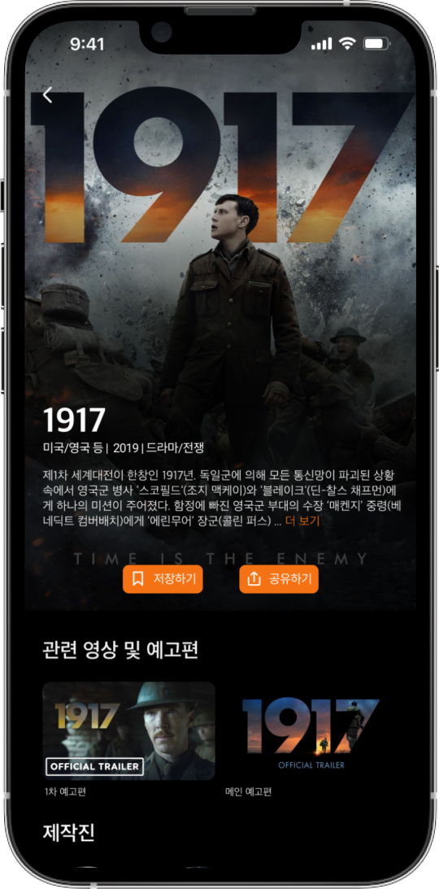
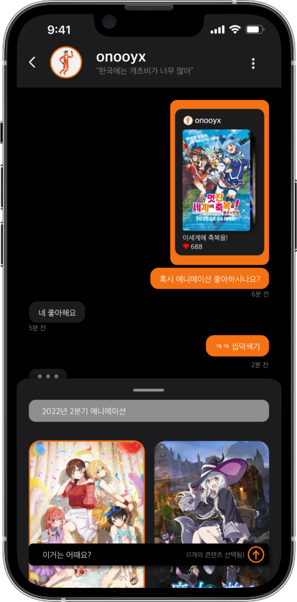

Sequence
끊임없이 생산되는 콘텐츠와 감당 안 되는
OTT 춘추전국시대에 놓인 세상
그리고 그런 것을 즐기는 우리들을 위한
SNS형 커뮤니티
Summary
이 프로젝트는 개인적인 필요에 의해 기획되었습니다.
코로나 19로 인해 영화관을 가는 빈도는 줄고 OTT를 이용하는 빈도는 크게 늘어났습니다.
영화 버닝은 굉장히 심오하고 담긴 의미가 많은데 이 영화를 집에서 OTT를 통해 혼자 감상하고 든 생각인 “고양이(스토리 중 등장)는 주연의 상실감을 표현”하는 것 같다는 제 생각을 누군가에게 말하고 상대방의 생각을 듣고 싶은데 그럴 수가 없었습니다.
친구 중 누가 이 영화를 봤는지도 모르니까요.
단편적인 예지만 모두들 한 번씩은 겪어봤으리라 생각되어 기획한
콘텐츠만을 위한 SNS 입니다.
About
- Duration
- 2022. 03 ~ 2022. 06 (4개월)
- Project
- Solo Project
- Role
- UIUX와 기획을 포함한 모든 부분
- Tool
- Figma
Photoshop
Illustrator
영화, 애니메이션, 드라마, 다큐멘터리 등을 보고 느낀 감상을 다른 사람과 함께 말하고 싶은 경험은 누구나 한 번쯤 있습니다.
최근엔 영화관 보다는, 독립적인 공간에서 이용하는 OTT 서비스를 활용해 시청하는 경우가 잦기 때문에 옆사람과 얘기할 수도 없죠.
그렇다면 이 감상을 누군가와 얘기할까요?
Instgram이나 Facebook에 올리자니 내 친구들이 과연 관심이 있을까? 반응이 없을 거 같은데...
이런 걱정이 앞서 올리기를 주저하고 #일상 #카페투어 #브런치 같은 일상만 공유하며 나와 같은 영화를 본 친구를 찾아 떠나는 여정에 올라야 합니다.
온보딩
좋아하는 콘텐츠를 선택하고 팔로우 할 유저를 찾아보세요.
선택된 콘텐츠와 팔로우 한 유저를 기반으로
큐레이팅 됩니다.
뉴스피드
내가 팔로잉한 유저의 새로운 게시물을 받아보고
콘텐츠에 대해 알아볼 수 있습니다.

콘텐츠에 대한 정보를 수집하고
감상을 공유합니다.
채팅
마음이 맞는 사용자를 발견했다면
더 깊은 대화를 나눌 수 있습니다.
위로 스와이프 해
원하는 콘텐츠를 선택 후
전송할 수 있습니다.

상세 페이지
줄거리와 예고편을
감상하고
감독과 출연진에
대해
알아보세요
OTT에서 바로 감상하거나
이 영화가 포함된 다른
게시물도 확인해보세요
탐색
다양한 OTT의 순위 제공
취향에 맞춘 다른 사용자의 게시물을 추천합니다.
남들은 뭘 보는 지 궁금하지 않나요?
각종 OTT의 콘텐츠 순위도 제공합니다.
다양한 탐색 유도
최근 인기가 좋은 게시물을 보여주고
이용이 활발하거나 영향력 있는 사용자도
보여줍니다.
파도타기처럼 말이죠.
업로드
원하는 콘텐츠를 선택하고
자유롭게 리뷰를 작성합니다.
별점은 없습니다.
남들의 시선과
내 시선은 다르니까요.
연동된 OTT 에서 감상한
콘텐츠 리뷰 작성을
유도합니다.
콘텐츠가 여러 개일 경우
각각 리뷰를 작성합니다.
찾고 싶은 영화가 있나요?
여러가지 항목으로 검색이 가능합니다.
제목과 배우는 물론 감독과 배급사까지
지원합니다.
무엇을 볼 지 모르겠나요?
테마별 리스트와
장르별 리스트를 제공합니다.
내 프로필
내 취향을 나타내요.
내가 작성한 게시물과
저장한 콘텐츠를 확인하고
프로필을 꾸밀 수 있습니다.
좋아하는 명대사를 표시할 수 있습니다.
 좋아요 한 콘텐츠와 게시물을
좋아요 한 콘텐츠와 게시물을
확인할 수 있습니다.